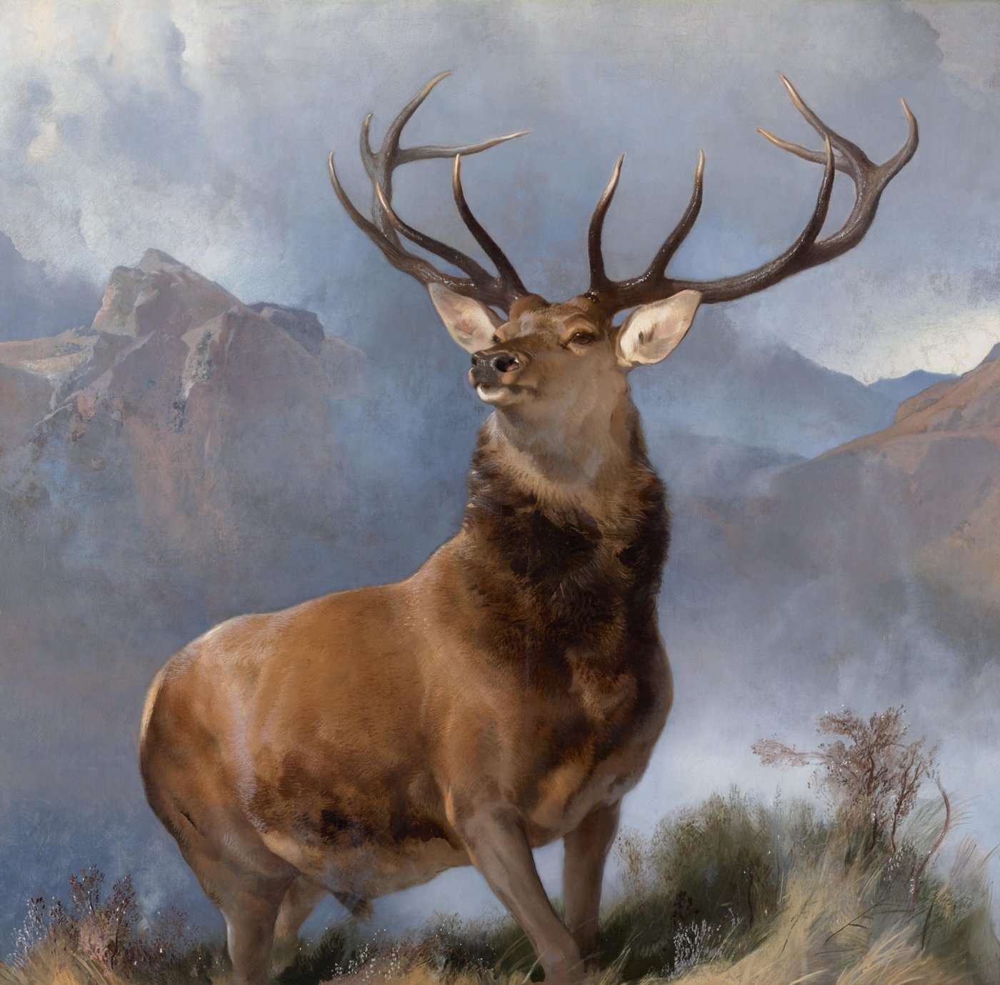

Salmo 42 — La Traducción Mister

Salmo 42. El ciervo de Landseer es un ciervo rojo escocés en la niebla de las tierras altas, no un ciervo de los montes hebreos, y está de pie, no sediento; el cuadro muestra al animal del primer versículo, ayyal, en su plenitud y sin agua a la vista. Está aquí por el animal y por el aire de montaña del Hermón del salmo.

Notas del traductor — versículo por versículo
⭐ El encabezado cuenta como versículo. Como en el Salmo 63, el hebreo cuenta el encabezado como versículo 1, así que el ciervo está aquí en el versículo 2 y en el versículo 1 en las versiones españolas del estante, que imprimen el encabezado sin número; desde el versículo 2 van un número atrás. Los números de versículo de esta página son los hebreos. El encabezado es «al director, masquil de los hijos de Coré», uno de los once encabezados de esa familia. El Salterio griego y latino numera este salmo 41, porque une los Salmos 9 y 10, y lo encabeza «Hasta el fin, entendimiento para los hijos de Coré».
⭐ ¿Un salmo, o dos? El Salmo 43 no tiene encabezado propio en el hebreo, y su último versículo es el estribillo de este salmo por tercera vez («¿por qué estás abatida, alma mía?» está en tres versículos: 42:6, 42:12 y 43:5). El Salmo 43 está aún por llegar en esta traducción.
⭐ El ciervo jadea. Ta’arog es un verbo raro, jadear, clamar de anhelo, y está en este único versículo, dos veces, con esta ortografía; el libro de Joel lo tiene una vez con vav, del ganado ante un cauce seco, «aun las bestias del campo jadean por ti, porque se han secado las corrientes de agua» (Joel 1:20, ya en estas páginas; diccionario). La corriente es afiq, un cauce con agua (diccionario), y «corrientes de agua» está en cuatro versículos: Joel 1:20, Salmo 18:16, este versículo y Cantares 5:12 (los dos últimos aún por llegar en esta traducción). El animal es ayyal, un ciervo macho. La RV 1909 dice «COMO el ciervo brama por las corrientes de las aguas», la RV60 «Como el ciervo brama por las corrientes de las aguas», la NVI «Como ciervo jadeante que busca las corrientes de agua», la TNM 1987 «Como la cierva que ansía las corrientes de agua» y la TNM 2019 «Como la cierva que anhela las corrientes de agua».
⭐ El Dios vivo. «Mi alma tiene sed de Dios» está en este único versículo, y el alma es la parte sedienta, como en el Salmo 63:2 (ya en estas páginas; diccionario). Dios es El chai, «el Dios vivo» (diccionario), y lo que se quiere es verlo: «y veré el rostro de Dios» está en este único versículo. La RV 1909 dice «vendré, y pareceré delante de Dios», la RV60 «¿Cuándo vendré, y me presentaré delante de Dios?», la NVI «¿Cuándo podré presentarme ante Dios?», la TNM 1987 «¿Cuándo vendré y me presentaré delante de Dios?» y la TNM 2019 «¿Cuándo podré venir y presentarme delante de Dios?».
⭐ Lágrimas por pan. «Mis lágrimas han sido mi pan» está en este único versículo, y la burla que la acompaña es «¿Dónde está tu Dios?», que está en tres versículos: este, el versículo 11 y Jeremías 2:28 (Jeremías 2:28, ya en estas páginas), donde Jehová se lo pregunta a los ídolos, «¿dónde están tus dioses que te hiciste?». La RV 1909 dice «Fueron mis lágrimas mi pan de día y de noche», la RV60 «Fueron mis lágrimas mi pan de día y de noche», la NVI «Mis lágrimas son mi pan de día y de noche», la TNM 1987 «mis lágrimas han llegado a ser alimento día y noche» y la TNM 2019 «mis lágrimas son mi alimento».
⭐ El gentío, y la fiesta. «Derramaré sobre mí mi alma», ve’eshpekhah alai nafshi, es el verbo de Ana en Silo, «he derramado mi alma delante de Jehová» (1 Samuel 1:15, ya en estas páginas). Lo que el alma recuerda es la peregrinación: «entre el gentío solía caminar despacio» está en este único versículo, con dos palabras raras, sakh, un gentío, y eddaddem, caminar despacio en una procesión, y «una multitud que celebra la fiesta» está en este único versículo. La RV 1909 dice «derramaré sobre mí mi alma» y «haciendo fiesta la multitud», la RV60 «derramo mi alma dentro de mí» y «del pueblo en fiesta», la NVI «me deshago en llanto», la TNM 1987 «solía andar lentamente delante de ellos a la casa de Dios» y la TNM 2019 «iba caminando delante de ellos solemnemente».
⭐ Hablarle al alma. El salmista discute con su propia alma: «¿por qué estás abatida?», tishtochachi, «y por qué gimes dentro de mí?», vatehemi (que está en este único versículo), luego la orden, «espera en Dios», hochili, y la razón, «porque todavía le daré gracias», que está en tres versículos, los mismos tres del estribillo. La RV 1909 dice «¿Por qué te abates, oh alma mía, Y te conturbas en mí? Espera á Dios», la RV60 «¿Por qué te abates, oh alma mía, Y te turbas dentro de mí? Espera en Dios», la NVI «¿Por qué estás tan abatida, alma mía?», la TNM 1987 «¿Por qué estás desesperada, oh alma mía, y por qué estás alborotada dentro de mí? Espera a Dios» y la TNM 2019 «¿Por qué siento esta agitación dentro de mí?».
⭐ «Las salvaciones de su rostro». El primer estribillo termina «las salvaciones de su rostro», que está en este único versículo; el último termina con «las salvaciones de mi rostro, y mi Dios» (que está en dos versículos, el versículo 12 y el Salmo 43:5), y el primer estribillo hebreo no termina con «mi Dios», que empieza el versículo siguiente: Elohai alai nafshi tishtochach, «Dios mío, dentro de mí mi alma está abatida». La RV 1909 dice «Por las saludes de su presencia», la RV60 «Salvación mía y Dios mío», la NVI «¡Él es mi salvación y mi Dios!», la TNM 1987 «como la magnífica salvación de mi persona» y la TNM 2019 «como mi Gran Salvador».
⭐ Jordán, Hermón, Mizar. El lugar desde el que el alma recuerda a Dios es el lejano norte: «desde la tierra del Jordán» está en este único versículo, «los Hermones» (el plural está en este único versículo, las muchas cimas del monte) y «el monte Mizar» está en este único versículo, mits’ar, «pequeño». La RV 1909 dice «desde tierra del Jordán, Y de los Hermonitas, desde el monte de Mizhar», la RV60 «desde la tierra del Jordán, Y de los hermonitas, desde el monte de Mizar», la NVI «desde las alturas del Hermón, desde el monte Mizar», la TNM 1987 «los picos del Hermón, desde la montaña pequeña» y la TNM 2019 «los picos del Hermón».
⭐ Un abismo llama a otro abismo. «Un abismo llama a otro abismo» está en este único versículo, con tehom, el abismo de Génesis 1:2 (ya en estas páginas), y el primer abismo es respondido por un segundo, con una voz: «tus cataratas», tsinnorekha, está en este único versículo, la palabra del canal de agua (diccionario; la misma palabra que en 2 Samuel 5:8, ya en estas páginas). El clamor desde las profundidades del Salmo 130:1 (ya en estas páginas) usa otra palabra para lo hondo, ma’amaqqim. La última línea, «todas tus rompientes y tus olas han pasado sobre mí» está en dos versículos, este y Jonás 2:4. La RV 1909 dice «Un abismo llama á otro á la voz de tus canales», la RV60 «Un abismo llama a otro a la voz de tus cascadas», la NVI «Un abismo llama a otro abismo en el rugir de tus cascadas», la TNM 1987 «Profundidad acuosa está llamando a profundidad acuosa» y la TNM 2019 «Aguas profundas llaman a aguas profundas».
⭐ El nombre, una vez. El nombre Jehová está en este salmo una vez, aquí, en un salmo donde Dios es por lo demás Elohim y El: «Jehová manda su amor leal» está en este único versículo, con chesed (diccionario), de día, y «su canción está conmigo» está en este único versículo, de noche. La oración va dirigida a «el Dios de mi vida», que está en este único versículo. La RV 1909 dice «De día mandará Jehová su misericordia», la RV60 «Pero de día mandará Jehová su misericordia», la NVI «que de día el Señor envíe su amor», la TNM 1987 «De día Jehová ordenará su bondad amorosa» y la TNM 2019 «De día, Jehová me concederá su amor leal».
⭐ «Mi roca», y «olvidado». «A Dios, mi roca» está en este único versículo, y la pregunta sigue, «¿por qué me has olvidado?», que está en este único versículo; «bajo la opresión del enemigo» está en dos versículos, este y el Salmo 43:2. La RV 1909 dice «Roca mía, ¿por qué te has olvidado de mí?», la NVI «a mi roca», la TNM 1987 «Dios mi peñasco» y la TNM 2019 «A Dios, mi peñasco».
⭐ Un quebrantamiento en los huesos. «Con un quebrantamiento en mis huesos» está en este único versículo, con retsach, palabra que es también el hebreo para asesinato; la burla del versículo 4, «¿Dónde está tu Dios?», se dice otra vez como un golpe. El estante se divide: la RV 1909 dice «Mientras se están quebrantando mis huesos», la RV60 «Como quien hiere mis huesos», la NVI «Mortal agonía me penetra hasta los huesos», la TNM 1987 «Con asesinato contra mis huesos» y la TNM 2019 «Con odio asesino».
⭐ El estribillo, por segunda vez. El estribillo del versículo 6 se dice una vez más, ahora terminando «y mi Dios». La RV 1909 dice «Es él salvamento delante de mí, y el Dios mío», la RV60 «Salvación mía y Dios mío», la NVI «¡Él es mi salvación y mi Dios!», la TNM 1987 «como la magnífica salvación de mi persona y como Dios mío» y la TNM 2019 «como mi Gran Salvador y mi Dios».
Patrones que vale la pena llevar adelante
Dónde esta traducción mantiene las palabras exactas y distintas: «jadea» para ta’arog, como en Joel 1:20; «corrientes de agua» para afikei mayim; «el Dios vivo» para El chai; «alma» para nefesh; «amor leal» para chesed; «mi roca» para sal’i; «Dios» para Elohim y El, y «Jehová» para el nombre, que está una vez en el salmo, en el versículo 9. El hebreo no tiene pares de escrito y leído en este salmo.
Ecos pagados. El jadeo de Joel 1:20; la sed del Salmo 63:2; la pregunta de Jeremías 2:28; el alma derramada de Ana en 1 Samuel 1:15; el abismo de Génesis 1:2; el canal de agua de 2 Samuel 5:8; y las profundidades del Salmo 130:1.
Ecos plantados. Las otras corrientes de agua (Salmo 18:16, Cantares 5:12); las mismas olas en Jonás 2:4; y el tercer decir del estribillo, con el resto de este salmo, en el Salmo 43 (43:2 y 43:5). Ninguno de estos está todavía en estas páginas.
⚠ Una nota sobre el orden: los Salmos están en estas páginas en el 1, 8, 18, 19, 22, 23, 24, 25, 27, 32, 34, 37, 40, 42, 46, 51, 56, 62, 63, 90, 91, 100, 103, 118, 119, 121, 130, 139 y 150, elegidos por lo mucho que se leen y no en orden. El hilo secuencial no cambia: el siguiente en la secuencia es el Salmo 2.